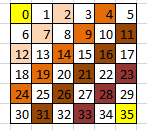
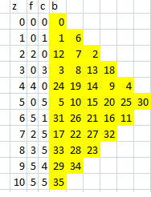

Zig Zag
Han habido varias contribuciones al desafío del Zig Zag, si todavía no lo has leido, y te animas a contestar el test, entonces antes de seguir lee el desafío e intenta resolverlo.
La solución más concisa que conozco aparece en el sitio Rosseta Code, está escrita en el lenguaje J y es la siguiente:
($ [: /:@; <@|.`</.@i.)@,~ 5
Increible, ¿verdad? En este caso es la solución para una matriz de 5 x 5. Hay una explicación de ese código acá, pero antes de que emprendan la tarea de tratar de entenderla veamos que respondieron algunos lectores y después le voy a mostrar mi solución.
Si tuviera que elegir 3 finalistas me gustan las soluciones de de Luis Cárdenas (en perl), la de Javier Rovegno (en python) y la de Francisco Rojas (en Java). En particular, creo que la más sucinta es la de Francisco, Luis hizo una optimización interesante y queda en segundo lugar.
La solución de Javier es representativa de la estrategia más común, que es usar una suerte de cursor que indica hacia donde hacer la siguiente movida, las otras soluciones siguen ese esquema, pero la de Javier me parece las más legible de las de este tipo.
La solución de Francisco Rojas me sorprendió por su brevedad, 28 lineas en Java. La clave está en que Francisco intuyó una propiedad de las diagonales y las antidiagonales, que vamos a aclarar en breve.
Ahora les voy a explicar como yo solucioné el problema, esta solución no necesariamente es la más óptima (hay varias soluciones mejores en Rosseta Code), pero tiene dos características interesantes, no hay ningún if en el algoritmo, y usa un arreglo de una dimensión para simular la matriz.
El código completo, escrito en C++, va más abajo, acá van las dos funciones que implementan el algoritmo:
void zigzag(int* array, int n)
{
int c = 0;
int d = 1-n;
int k = n;
int n2 = 2*n;
int z;
for (z = 0; z < n; z++, d = -d, k = n/k)
c = run_diag(array, z*k, z+1, d, c);
for (; z < n2; z++, d = -d, k = n/k)
c = run_diag(array, z*k+d*(z+1-n), n2-(z+1), d, c);
}
int run_diag(int* array, int base, int top, int delta, int cont)
{
for (int i = 0, l = base; i < top; i++, l += delta)
array[l] = cont++;
return cont;
}
Para entender esto fíjense en la siguiente figura:

Diagonales y Antidiagonales
Lo que hace esta figura es escribir en cada cuadrado la suma de sus coordenadas. En la figura las antidiagonales son blancas, y las diagonales son de colores. Las diagonales “suben” y las antidiagonales “bajan”, si se fijan las diagonales son pares, y las antidiagonales son impares.
Acá está el cuadrado zig zag de 6x6:

Zig Zag de 6x6
Con esto se puede optimizar varios de los algoritmos que propusieron los lectores.
El paso siguiente es que yo considero que voy a usar un arreglo de una sola dimensión, entonces si recorriera la matriz como arreglo cada coordenada esta dada por un número correlativo:

Por lo tanto, si recorriera la matriz a lo largo de las diagonales y antidiagonales, para una matriz de N x N tendré 2N-1 diagonales que recorrer, y por cada diagonal se recorreran las casillas en el orden que sale en la figura:

En esta figura z es la diagonal (para una matriz de 6x6 son 11 diagonales, numeradas de 0 a 10), f y c son las filas y columnas iniciales de la diagonales, b indica la base, o primer indice de la diagonal.
Veamos la diagonal 4, como es diagonal entonces “sube”, por lo tanto parte de un indice alto (24) y termina en un indice bajo (4). La antidiagonal 5 “baja”, por lo tanto parte de un indice bajo (5) y termina en un índice alto (30). Por lo tanto en el caso de las diagonales el paso (delta) es negativo y vale -5 (1-N). En el caso de las antidiagonales el paso es positivo y vale 5 (N-1). Esto explica la variable d que cambia de signo en los dos loops.
Lo otro es que cada diagonal tiene una cantidad de elementos que va en aumento hasta llegar a la diagonal de la mitad (N-1) y después empieza a disminuir, eso explica la variable top que recibe la función run_diag(). También explica por que tenemos dos loops, y nos permite eliminar los if.
Les queda propuesto deducir como llegué a los otros valores.
Un par de trucos que se usaron, para calcular el valor b (base), que corresponde al indice inicial de cada diagonal (antidiagonal) se usa una variable k que tiene dos valores posibles: 1 y n, por eso que se parte con k = n y luego hace k = k/n en cada ciclo del for. La variable c es el contador que va creciendo de 0 a (N*N-1), se pasa como parámetro y se retorna como resultado, esto para usar un estilo más funcional, se podría haber dejado como una variable global, o pasar por referencia.
Espero haber explicado bien la solución, sino para eso están los comentarios.
Una cosa interesante es que a partir de esto es fácil generalizar para el caso de una matriz de NxM (¿alguien se anima a hacer los cambios?).
A continuación el código completo:
#include <stdlib.h>
#include <stdio.h>
int run_diag(int* array, int base, int top, int d, int cont);
void zigzag(int* array, int n)
{
int c = 0;
int d = 1-n;
int k = n;
int n2 = 2*n;
int z;
for (z = 0; z < n; z++, d = -d, k = n/k)
c = run_diag(array, z*k, z+1, d, c);
for (; z < n2; z++, d = -d, k = n/k)
c = run_diag(array, z*k+d*(z+1-n), n2-(z+1), d, c);
}
int run_diag(int* array, int base, int top, int delta, int cont)
{
for (int i = 0, l = base; i < top; i++, l += delta)
array[l] = cont++;
return cont;
}
void print_array(int* p, int n)
{
for (int i = 0; i < n; i++) {
for (int j = 0; j < n; j++)
printf("%2d ", *p++);
printf("\n");
}
}
int main(int argc, char* argv[])
{
if (argc != 2) {
fprintf(stderr, "uso: zigzag N\n");
return -1;
}
int n = atoi(argv[1]);
int* array = (int*) malloc(n*n*sizeof(int));
zigzag(array, n);
print_array(array, n);
return 0;
}
Gracias a todos los que han participado. Pronto publicaré otros desafíos.